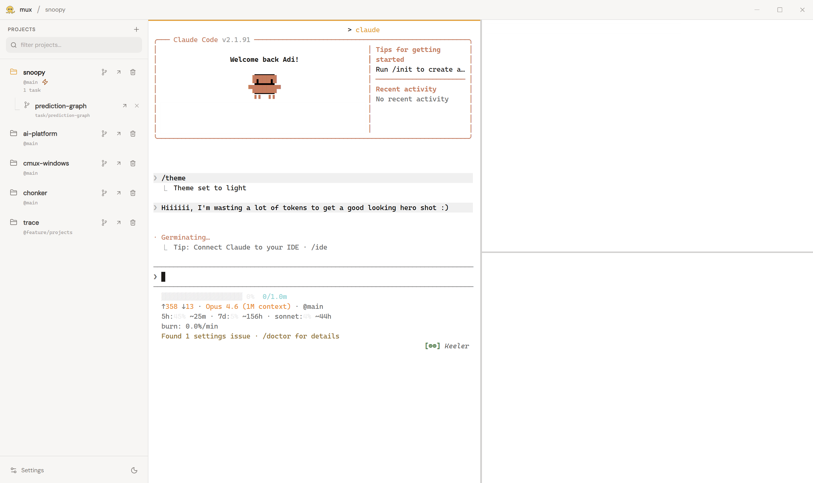
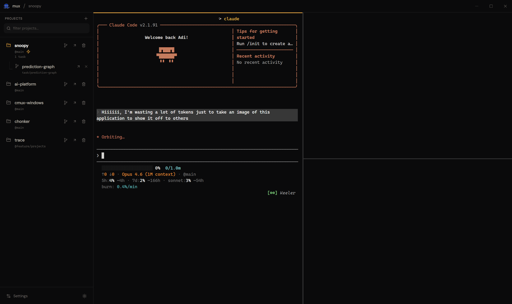

Takoyaki
Source
I got jealous of
Mac users, so I built
this
A terminal multiplexer for coding agents
Download for Windows
split panes
live agent status
git worktree tasks
editor integration
session persistence
dark + light themes
🐡
claude usage? try
chonker

